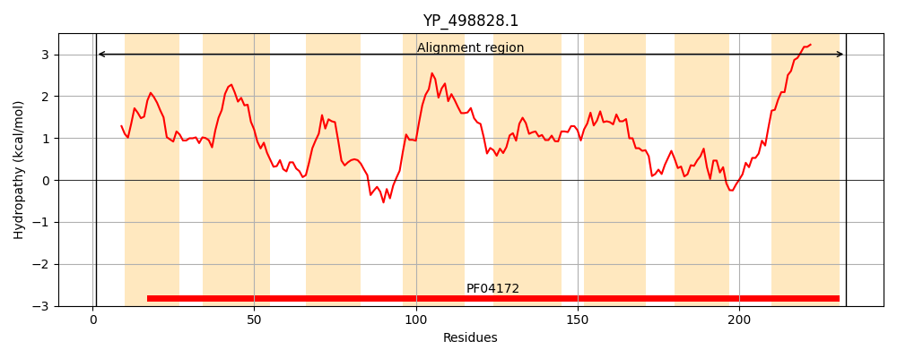
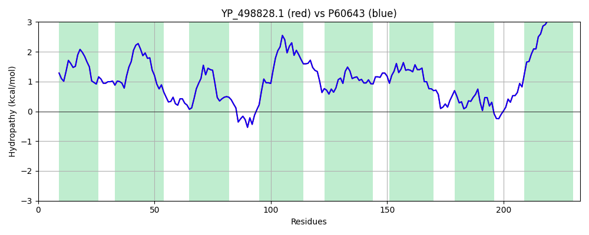

Hit Accession: P60643
Hit TCID: 2.A.122.1.3
Hit Description: gnl|BL_ORD_ID|11121 gnl|TC-DB|P60643|2.A.122.1.3 Antiholin-like protein LrgB OS=Staphylococcus aureus (strain NCTC 8325) GN=lrgB PE=1 SV=1
Mach Len: 233
e:0.000000
Query TMS Count : 8
Hit TMS Count: 8
TMS-Overlap Score: 8.000000
Predicted Substrates:None
BLAST Alignment:
Score: 1158 , Bit scores: 450 bits, E-value: 1.6e-163, Alignment length: 233, Percentage identity: 100
Query: 1 MINHLALNTPYFGILLSVIPFFLATILFEKTNRFFLFAPLFVSMVFGVAFLYLTGIPYKTYKIGGDIIYFFLEPATICFAIPLYKKREVLVKHWHRIIGGIGIGTVVALLIILTFAKLAQFANDVILSMLPQAATTAIALPVSAGIGGIKELTSLAVILNGVIIYALGNKFLKLFRITNPIARGLALGTSGHTLGVAPAKELGPVEESMASIALVLVGVVVVAVVPVFVAIFF 233
MINHLALNTPYFGILLSVIPFFLATILFEKTNRFFLFAPLFVSMVFGVAFLYLTGIPYKTYKIGGDIIYFFLEPATICFAIPLYKKREVLVKHWHRIIGGIGIGTVVALLIILTFAKLAQFANDVILSMLPQAATTAIALPVSAGIGGIKELTSLAVILNGVIIYALGNKFLKLFRITNPIARGLALGTSGHTLGVAPAKELGPVEESMASIALVLVGVVVVAVVPVFVAIFF
Sbjct: 1 MINHLALNTPYFGILLSVIPFFLATILFEKTNRFFLFAPLFVSMVFGVAFLYLTGIPYKTYKIGGDIIYFFLEPATICFAIPLYKKREVLVKHWHRIIGGIGIGTVVALLIILTFAKLAQFANDVILSMLPQAATTAIALPVSAGIGGIKELTSLAVILNGVIIYALGNKFLKLFRITNPIARGLALGTSGHTLGVAPAKELGPVEESMASIALVLVGVVVVAVVPVFVAIFF 233 | Protein Hydropathy Plots: |
|---|
|  |  |
Pairwise Alignment-Hydropathy Plot:
|
|---|
|  |